rmgpy.quantity — Physical Quantities and Constants¶
This module contains classes and methods for working with physical quantities, particularly the Quantity class for representing physical quantities and the Constants class for defining relevant physical constants.
Physical Constants¶
The constants available are listed below. All values were taken from NIST.
- class rmgpy.quantity.Constants¶
A class defining several physical constants:
Attribute Type Description Na double The Avogadro constant 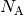, in 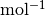 kB double The Boltzmann constant 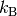, in 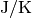 R double The gas law constant  , in 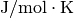
, in 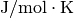h double The Planck constant  , in 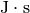
, in 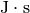c double The speed of light in a vacuum  , in 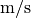
, in 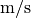pi double The mathematical constant 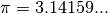
Quantity Objects¶
Many of the physical quantities encountered throughout the chem package have associated units and/or uncertainties. To represent these quantities in a consistent manner, the Quantity class has been provided. Quantity objects are primarily used with the classes in the chem package to store the physical quantities behind-the-scenes. Generally you should not need to create Quantity objects by hand.
- class rmgpy.quantity.QuantityError¶
An exception to be raised when an error occurs while working with physical quantities in RMG. Pass a string describing the circumstances of the exceptional behavior.
- class rmgpy.quantity.Quantity¶
A representation of a physical quantity, with optional units and uncertainty information. The attributes are:
Attribute Type Description value double The numeric value of the quantity in SI units units str The units the value was specified in uncertainty double The numeric uncertainty in the value uncertaintyType str The type of uncertainty: '+|-' for additive, '*|/' for multiplicative values numpy.ndarray The numeric values of the quantity in SI units uncertainties numpy.ndarray The numeric uncertainty of the values in SI units Only one of value and values is meaningful at a time. If values is not None, then the class assumes that it represents an array of quantities and uses the values attribute. If values is None, the class assumed that it represents a single quantity and uses the value attribute. You can test for this using the isArray() method.
In order to preserve the efficiency that Cythonization provides, the actual value of the quantity is stored in SI units in the value (for a single quantity) or values (for an array of quantities) attributes. The methods getConversionFactorToSI() and getConversionFactorFromSI() have been provided to facilitate unit conversions when reading and writing the quantity data. These methods use the quantities package, and are generally not optimized for speed.
When providing an array of quantities, you have the option of providing no uncertainty data, a single uncertainty value to use for all values in the array, or an array of uncertainties corresponding to each value. When providing a single quantity, you can either provide no uncertainty or a single uncertainty value for that quantity. The uncertainty data can be specified as either additive or multiplicative, and must be symmetric.
- equals()¶
Return True if the everything in a quantity object matches the parameters in this object. If there are lists of values or uncertainties, each item in the list must be matching and in the same order. Otherwise, return False (Originally intended to return warning if units capitalization was different, however, Quantity object only parses units matching in case, so this will not be a problem.)
- getConversionFactorFromSI()¶
Get the conversion factor for converting a quantity to a given set of units from the SI equivalent units.
- getConversionFactorToSI()¶
Get the conversion factor for converting a quantity in a given set of units to the SI equivalent units.
- getValueInGivenUnits()¶
Return the value of the quantity in the stored units. (The value is stored internally in SI units.)
- isArray()¶
Return True if this quantity contains an array of values or False if it contains only a single value. If the former, you should use the values attribute to get the values (in SI units) of the quantities as a NumPy array. If the latter, you should use the value attribute to get the value of the quantity as a float.
- isUncertaintyAdditive()¶
Return True if the uncertainty is specified in additive format and False otherwise.
- isUncertaintyMultiplicative()¶
Return True if the uncertainty is specified in multiplicative format and False otherwise.